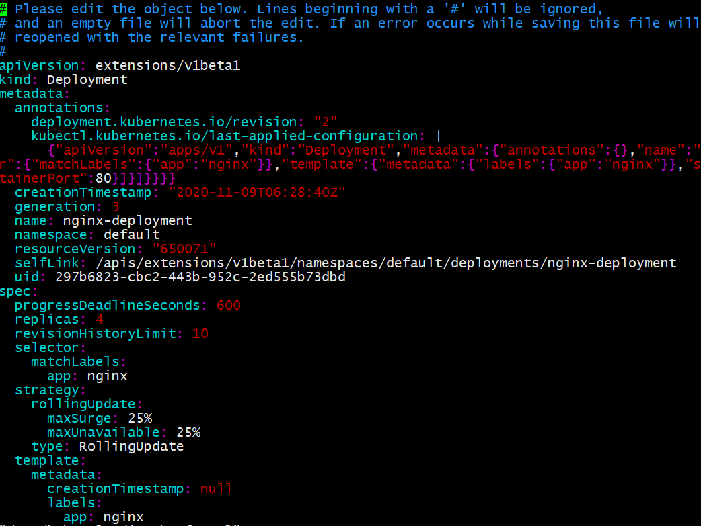

今天补充下k8s命令和基础，查缺补漏。
kubectl命令
kubectl 是k8s操作的基本命令
1 | kubectl get nodes 获取集群运行的节点信息 |
节点和标签
可以通过Kubectl get 指定节点得名字获得指定节点得信息
1 | kubectl get node master-node |
我们查看节点详细信息可以指明类型
1 | kubectl get node -o yaml |
查看节点及其labels
1 | kubectl get node --show-labels |
会显示所有节点，及其所有labels
1 | NAME STATUS ROLES AGE VERSION LABELS |
我们可以给指定的节点打标签
1 | kubectl label node zackhost env=test |
查看label
1 | kubectl get node --show-labels |
可以看到env=test的label了
1 | NAME STATUS ROLES AGE VERSION LABELS |
删除label
1 | kubectl label node zackhost env- |
删除时将对应的key值env后边写上-就是删除key值为env的label
给节点设置角色worker
1 | kubectl label node k8s-node1 node-role.kubernetes.io/worker= |
pod总结
pod是一个或者一组应用容器，他们分享资源(volume等)
pod内容器分享相同的命名空间，如ip地址等
Pod是k8s最小的调度单位
Pod的定义
1 | apiVersion: v1 |
然后我们基于上面的nginx_busybox.yml文件创建pod
1 | kubectl create -f nginx_busybox.yml |
显示
1 | pod "nginx-busybox" created |
然后我们查看pod列表
1 | kubectl get pods |
会显示pod列表
1 | NAME READY STATUS RESTARTS AGE |
我们通过describe查看一个pod的详细信息
1 | kubectl describe pod nginx-busybox |
也可以
1 | kubectl get pods nginx-busybox -o wide |
我们可以通过pod进入到容器内部
1 | kubectl exec nginx-busybox -it sh |
会默认进入第一个容器中
1 | Defaulting container name to nginx. |
我们可以根据yml文件中指定的pod，删除该pod
1 | kubectl delete -f nginx_busybox.yml |
如果我们想操作pod中某个容器，可以通过-C选项指定容器名字
1 | kubectl exec nginx-busybox -c nginx date |
Namespace 隔离环境
多个团队使用k8s需要通过namespace进行环境隔离
查看机器上的namespace
1 | kubectl get namespaces |
显示如下
1 | NAME STATUS AGE |
查看kube-system命名空间下的pod
1 | kubectl get pods --namespace kube-system |
我们创建一个demo的namespace
1 | kubectl create namespace demo |
然后我们实现一个pod的yaml文件
1 | apiVersion: v1 |
我们指明了pod的namespace为demo，接下来创建这个pod
1 | kubectl create -f nginx_demo.yml |
我们可以通过指定demo命名空间查看pod
1 | kubectl get pods --namespace demo |
可以看到demo命名空间下存在我们刚创建的pod
1 | NAME READY STATUS RESTARTS AGE |
也可以列举出所有命名空间的pod
1 | kubectl get pod --all-namespaces |
可以看到列举出了所有命名空间下的pod
1 | NAMESPACE NAME READY STATUS RESTARTS |
context上下文
获取所有contexts
1 | kubectl config get-contexts |
显示context列表如下
1 | CURRENT NAME CLUSTER AUTHINFO NAMESPACE |
我们可以设置一个context
1 | kubectl config set-context demo --user=kubernetes-admin --cluster=kubernetes --namespace=demo |
创建后我们查看下
1 | kubectl config get-contexts |
显示如下
1 | CURRENT NAME CLUSTER AUTHINFO NAMESPACE |
user和cluster是怎么确定的呢？我们可以通过
1 | kubectl config view |
可以看到user和cluster信息
删除context之前，最好先切换到其他context
1 | kubectl config use-context kubernetes-admin@kubernetes |
删除namespace
1 | kubectl delete namespace demo |
deployment和controller
controller位于master节点，负责任务调度和节点启动停止等控制。
deployment是描述了一个期望的状态，而controller会根据实际状态和期望状态做对比，
会改变实际状态满足期望状态。
比如我们通过scheduler将pod放在第一个node上了，而第一个node宕机了。pod内的环境就会消失，任务也会终止。
所以我们尽可能的使用deployment，deployment会根据实际情况调整任务分配到其他节点。而controller就是会尝试
在其他节点重新创建pod。
我们先实现一个nginx_deployment.yml文件
1 | apiVersion: apps/v1 |
上述deployment文件定义了deployment名字为nginx-deployment，选择器选择匹配的pod的label为app:nginx，
replicas：2告诉deployment启动2个pods，template定义了pod的内容，pod的标签为app:nginx，
pod内部定义了容器的名字为nginx，容器的镜像选择nginx:1.7.9，暴露的端口号为80
我们启动这个deployment
1 | kubectl create -f nginx_deployment.yml |
查看deployment
1 | kubectl get deployment |
我们可以根据label查看具体的pod
1 | kubectl get pods -l app=nginx |
显示如下
1 | NAME READY STATUS RESTARTS AGE |
接下来我们校验下deployment如何通过controller控制pod数量的，比如我们删除其中的一个pod
1 | kubectl delete pod nginx-deployment-5754944d6c-br7nh |
然后我们立即查看现在pod的信息
1 | kubectl get pods -l app=nginx |
输出如下
1 | NAME READY STATUS RESTARTS AGE |
看到nginx-deployment-5754944d6c-br7nh的pod正在终止
过了几秒我们再次查看
1 | kubectl get pods -l app=nginx |
可以看到目前稳定运行的两个pod
1 | NAME READY STATUS RESTARTS AGE |
我们可以更新deployment中容器的镜像版本，在更新前我们看下版本
1 | kubectl get deployment nginx-deployment -o wide |
显示版本为nginx:1.7.9
1 | NAME READY UP-TO-DATE AVAILABLE AGE CONTAINERS IMAGES SELECTOR |
我们再实现一个deployment,他的nginx版本为nginx:1.8
1 | apiVersion: apps/v1 |
我们更新deployment，需要使用apply命令
1 | kubectl apply -f nginx_deployment_update.yml |
更新后我们查看deployment
1 | kubectl get deployment nginx-deployment -o wide |
显示版本变为nginx:1.8
1 | NAME READY UP-TO-DATE AVAILABLE AGE CONTAINERS IMAGES SELECTOR |
我们也可以扩充pod数量，我们在实现一个nginx_deployment_scale.yml文件
1 | apiVersion: apps/v1 |
同样，我们执行更新命令
1 | kubectl apply -f nginx_deployment_scale.yml |
查看deployment信息
1 | kubectl get deployment -o wide |
显示版本
1 | NAME READY UP-TO-DATE AVAILABLE AGE CONTAINERS IMAGES SELECTOR |
获取pod信息
1 | kubectl get pod -l app=nginx -o wide |
显示四个pod正在运行
1 | NAME READY STATUS RESTARTS AGE IP NODE |
除了可以采用上述yml文件apply方式更新deployment，还可以在线编辑deployment
1 | kubectl edit deployment nginx-deployment |
会看到打开了一个vim，vim内容就是deployment的yml文件

也可以通过这个vim修改deployment信息，比如我们将replicas设置为3，然后ESC, :wq保存退出。
然后我们查看deployment信息
1 | NAME READY UP-TO-DATE AVAILABLE AGE CONTAINERS IMAGES SELECTOR |
也可以通过scale命令扩充pod数量
1 | kubectl scale --current-replicas=3 --replicas=4 deployment/nginx-deployment |
更新image版本，也可以通过yml文件apply，也可以edit方式，也可以用如下命令
1 | kubectl set image deployment/nginx-deployment nginx=nginx:1.9.1 |
ReplicaSet应用
replicaset负责处理deployment的scale操作
我们将之前生成的deployment全部删除，然后实现一个新的nginx_deployment.yml
1 | apiVersion: apps/v1 # for versions before 1.9.0 use apps/v1beta2 |
生成deployment
1 | kubectl apply -f nginx_deployment.yml |
查看生成得deployment
1 | kubectl get deployment -o wide |
显示如下
1 | NAME READY UP-TO-DATE AVAILABLE AGE CONTAINERS IMAGES SELECTOR |
我们可以查看replicaset信息
1 | kubectl get replicaset |
显示如下
1 | NAME DESIRED CURRENT READY AGE |
我们用scale命令将nginx的pod从四个变为六个
1 | kubectl scale --current-replicas=4 --replicas=6 deployment/nginx-deployment-test |
接下来我们通过一下几个命令都能查看更新后的pod和deployment信息
1 | kubectl get pods -l app=nginx |
我们可以通过describe获取deployment的描述信息
1 | kubectl describe deployment nginx-deployment-test |
会输出scale信息
1 | Events: |
如果我们更新容器镜像
1 | kubectl set image deployment/nginx-deployment-test nginx=nginx:1.9.1 |
这时我们查看描述信息
1 | kubectl describe deployment nginx-deployment-test |
可以看到更新政策为25%用来更新，25%用来提供服务的模式,而且会开辟副本做更新，最后统一合并。
1 | RollingUpdateStrategy: 25% max unavailable, 25% max surge |
我们可以通过如下命令查看更新版本的历史信息
1 | kubectl rollout history deployment nginx-deployment-test |
显示历史信息
1 | deployment.extensions/nginx-deployment-test |
可以看到有两次版本信息,可以指明指定版本信息
1 | kubectl rollout history deployment nginx-deployment-test --revision 1 |
显示的是版本1的信息
1 | deployment.extensions/nginx-deployment-test with revision #1 |
我们输入–revision 2可以看到版本2的信息
1 | kubectl rollout history deployment nginx-deployment-test --revision 2 |
版本2采用的镜像是1.9.1
1 | deployment.extensions/nginx-deployment-test with revision #2 |
我们可以回滚到指定版本
1 | kubectl rollout undo deployment nginx-deployment-test |
我们查看下deployment的信息
1 | kubectl get deployment nginx-deployment-test -o wide |
这时我们看下回滚历史
1 | kubectl rollout history deployment nginx-deployment-test |
默认只能保存两个版本。我们可以通过指定版本号回退到指定版本
1 | kubectl rollout undo deployment nginx-deployment-test --to-revision 2 |
总结
目前k8s的补充就到此为止，包括了kubectl命令，deployment的使用，pod，namespace，label等概念和操作。
以后会不断完善。感谢关注公众号